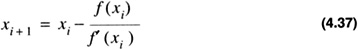

by Alan Parker
CRC Press, CRC Press LLC
ISBN: 0849371716 Pub Date: 08/01/93
|
|
Algorithms and Data Structures in C++
by Alan Parker CRC Press, CRC Press LLC ISBN: 0849371716 Pub Date: 08/01/93 |
| Previous | Table of Contents | Next |
If the divisor is normalized so that it begins with a 1 then the technique of the previous sections can be improved to skip over 1’s and 0’s. Shifting over 0’s is simple to see. If 0.000010101 is divided by 0.10111 It is easy to see that the first four quotient bits are zero. So rather than performing the subtraction, the dividend is renormalized each time a string of zero’s is encountered. Similarly, if after each subtraction the result is a string of 1’s, then the 1’s can be skipped over placing 1’s in the quotient bit. This technique is derived in Problem 4.5.
In Newton’s method the quotient to be formed is the product A (1 / B). For this case, once 1 / B is determined a single multiplication cycle generates the desired result. Newton’s method yields the iteration

which for the function
gives
Under suitable well known conditions xi will converge to the inverse. Hence using Newton’s algorithm the process of division is achieved via addition and multiplication operations. The C++ source code illustrating this technique is shown in Code List 4.17. The output of the program is shown in Code List 4.18.
Code List 4.17 Floating Point Division
Code List 4.18 Output of Program in Code List 4.17
The residue number systems is a system which uses an alternate way to represent numbers. For integers, in 2’s complement notation, the representation for a number was
with a value of
For this case, a number A is represented with n binary bits. The value is relatively easy to calculate via Eq. 4.41. A natural problem occurred with this representation for the process of addition. When n is large the calculation of the carry-in to each stage is the dominating factor with regard to the performance of the addition operation as noted in Section 4.1.2. Using methodologies in number theory, an alternate representation can be used which reduces the problems of with regard to the carry-in calculation.
The residue number system uses a set of relatively prime numbers:
and represents a number A with respect to these moduli by the n-tuple:
Two numbers are relatively prime if their greatest common divisor is one. Using the standard notation with
to denote the greatest common divisor of x and y. The requirement on the set M is that each of the members be pairwise relatively prime:
For example, a representation with the moduli
the number 12 is represented as
and 14 is represented as
The addition of 12 and 14 can be accomplished by adding the vector representation and performing the modulus operation:
Notice that the result is the same obtained when representing 26 in the notation.
The Range of the Residue Number Systems
The residue number system can represent N distinct numbers with
For example, the moduli in Eq. 4.47,
The result stated in Eq. 4.51 is established in Problem 4.15.
This section derives a method for calculating the value of a number given only its representation in terms of the moduli. It is necessary to introduce some quantities in number theory. The Euler totient function, φ (n) , is defined for a number, n, as the number of positive integers satisfying
For example,
If n is a prime number then
defining the weights, wi, as
The vector W as
and a number A, as
The value of A is given as
This result is established in Problem 4.17. Consider the example in Eq. 4.47. For this case:
Similarly, W becomes
To calculate the number 26 from its representation in Eq. 4.50 one has
A program to simulate the Residue Number System is shown in Code List 4.19. The output of the program is shown in Code List 4.20.
In the program a class data is declared which has the following data and functions:
This program is a natural example for the use of the overloading operators in C++. Since the addition of the two numbers in the residue systems consists of the respective additions of their moduli it is natural to replace this operator for addition.
The output supplies all the moduli and prints out the relatively prime numbers at the top. Notice that the print function takes in an optional char * to print out a small string. If the string is not supplied it defaults to an empty string.
Code List 4.19 Residue Number System
Code List 4.20 Output of Program in Code List 4.19
Code List 4.21 Euler Totient Function
Code List 4.22 Output of Program in Code List 4.21
| Previous | Table of Contents | Next |
)
){kind=link}
){kind=link}
){kind=link}
){kind=link}
){kind=link}
){kind=link}
){kind=link}
){kind=link}
){kind=link}
){kind=link}
){kind=link}